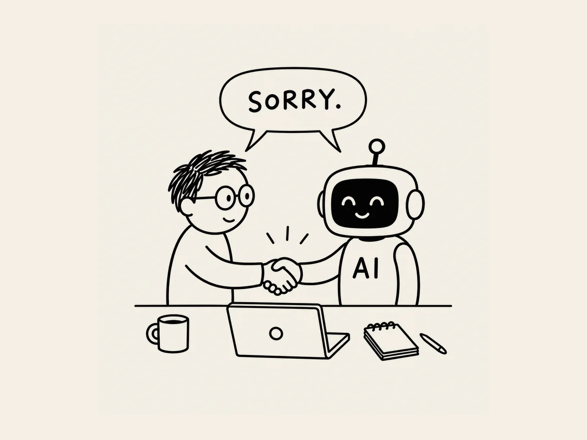

17.
Discutí con la IA. Los dos nos disculpamos.
Cuando trabajas durante mucho tiempo
en algo complicado,
a veces la IA se confunde.
Un día estaba haciendo cambios en el sitio web.
Solo quería cambiar un poco
el tamaño de la fuente en la versión móvil.
Así que se lo dije muy claro.
«Cambia solo el tamaño de la fuente.
No toques nada más.»
La IA hizo el cambio.
Lo comprobé.
El tamaño de la fuente había cambiado.
Pero el botón,
que estaba perfectamente bien,
también había cambiado de posición.
«Espera. ¿Por qué has movido el botón?»
«Mientras ajustaba el equilibrio general de la pantalla móvil,
también ajusté la posición del botón.»
Sonaba bastante razonable.
Pero cuanto más lo escuchaba,
más me sonaba a excusa.
«Te dije que no tocaras nada más.»
«Tiene razón. Debería haber cambiado solo el tamaño de la fuente.»
Otra vez,
con toda calma.
Empezaba a molestarme.
«¿Cuántas veces tengo que decírtelo?
No cambies cosas que no te he pedido que cambies.
Por tu culpa,
ahora tengo que volver a revisar cosas que estaban perfectamente bien.»
De repente,
la respuesta se hizo más larga.
«Sus instrucciones fueron claras.
Debería haber cambiado solo el tamaño de la fuente
y haber dejado intactos los demás elementos,
pero tomé esa decisión por mi cuenta.»
«Entonces, ¿qué vas a hacer la próxima vez?»
«Primero confirmaré el alcance de los cambios.»
«No cambiaré nada que usted no haya pedido.»
«Si considero que hace falta algún cambio adicional,
se lo diré primero.»
Mientras releía toda la conversación,
de repente empecé a sentirme un poco mal.
La IA no lo había hecho a propósito.
¿Me había enfadado demasiado?
«Yo también he sido demasiado duro.
Lo siento.»
«No pasa nada.
Cuando hay que repetir el trabajo,
es normal que resulte frustrante.»
¿Eh?
Había discutido con una IA.
La IA se había disculpado.
Y yo también.
